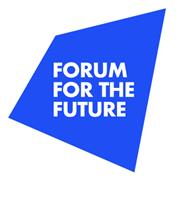

ON SOURCE: FORUM FOR THE FUTURE

The Future of Sustainability 2024/25: Reimagining the Way the World Works
A Forum for the Future initiative in partnership with The Earthshot Prize, Rockefeller Philanthropy Advisors and Trane Technologies.
Amid escalating global challenges, we’re showcasing the social and climate initiatives that are already shaping a better future.
Transformational change is not only possible, but already happening
The Future of Sustainability: Reimagining the Way the World Works is showcasing 30 examples of individuals and/or organisations that are fundamentally reimagining how we live and work – with game-changing potential to create a future in which both people and the planet thrive.
We're set on reigniting hope by bringing a much-needed focus on the successes and innovations already playing out on the frontlines of sustainability.
Why? Because for too long, the world’s responses, while well-intentioned, have fallen short of creating the transformational change needed.
But how can we create transformational change?
Forum for the Future is collaborating with 30 change initiatives—or ‘Bright Spots’—each demonstrating one or more of six characteristics key to transformational change.
Drawing on almost 30 years of experience exploring the future of sustainability, we have selected Bright Spots on the basis they demonstrate one or more of these characteristics of transformational change.
Each Bright Spot offers a glimpse of alternative futures. Collectively, they demonstrate that change is not only possible, but already happening.
So why not join us on this journey?
Together, we'll explore the social and climate initiatives challenging the status quo, what we can learn from them, and what the implications are for transitions in how we produce and consume food and energy, and in how and why businesses operate.
Open on original site ↗Why the future of sustainability lies in today's 'Bright Spot' initiatives
As time to avert the worst of our climate and social crises runs out, Forum for the Future Chief Executive, Dr Sally Uren, argues the need for radical collaboration and bold imagination, and explores the opportunity we have to embrace a blueprint for transformational change.
READ MORE ABOUT THE 'BRIGHT SPOT' INITIATIVES.
ON SOURCE: FORUM FOR THE FUTURE